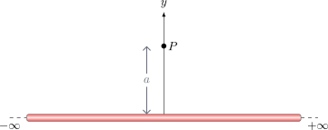

➖ Alambre Infinito#
Vamos a calcular el campo eléctrico generado por un hilo recto, infinitamente largo, que descansa sobre el eje \(x\) (desde \(x = -\infty\) hasta \(x = \infty\)). El hilo tiene una densidad de carga lineal uniforme \(\lambda\). Queremos determinar el campo en un punto \(P\) ubicado en las coordenadas \((0,a)\), es decir, sobre el eje \(y\) a una distancia \(a\) del alambre.
{kind=link}

1. El Poder de la Simetría#
Antes de escribir una sola ecuación, miremos la física del problema. Si elegimos un elemento de carga \(dq'\) en una posición \(x\) positiva, existirá un elemento idéntico \(dq'\) en la posición \(-x\) (en el lado negativo).
El elemento en \(x\) genera un diferencial de campo \(d\vec{E}\) que apunta hacia arriba y hacia la izquierda.
El elemento en \(-x\) genera un diferencial de campo \(d\vec{E}\) que apunta hacia arriba y hacia la derecha.
Las componentes horizontales (en el eje \(x\)) de estos dos campos apuntan en sentidos opuestos y se cancelan perfectamente. Las componentes verticales (en el eje \(y\)) apuntan en el mismo sentido y se suman. Por lo tanto, por simetría, sabemos de antemano que el campo total solo tendrá componente en la dirección \(y\).
2. Identificación de los Vectores y Diferenciales#
Diferencial de carga: \(dq' = \lambda dx\)
Vector fuente (sobre el alambre): \(\vec{r}' = x\hat{\imath}\)
Vector observación (el punto P): \(\vec{r} = a\hat{\jmath}\)
Vector distancia relativa: \(\vec{r} - \vec{r}' = -x\hat{\imath} + a\hat{\jmath}\)
Magnitud al cubo: \(|\vec{r} - \vec{r}'|^3 = (x^2 + a^2)^{3/2}\)
3. Planteamiento de la Integral#
Sustituimos nuestros términos en la fórmula general de Coulomb:
Como ya demostramos por simetría que la componente en \(x\) se integrará a cero, podemos descartarla y enfocarnos únicamente en la componente \(y\):
Para encontrar el campo total, integramos a lo largo de todo el alambre, desde \(-\infty\) hasta \(\infty\):
4. Resolución Matemática (Sustitución Trigonométrica)#
Para resolver esta integral, la técnica más elegante es usar trigonometría. Si imaginamos un triángulo rectángulo de catetos \(x\) e \(a\), el ángulo \(\theta\) formado con el eje \(y\) cumple que:
Si diferenciamos esta expresión respecto a \(\theta\): $\(dx = a \sec^2\theta d\theta\)$
¿Qué pasa con los límites de integración?
Si \(x \to \infty\), el ángulo \(\theta \to \pi/2\) (\(90^\circ\)).
Si \(x \to -\infty\), el ángulo \(\theta \to -\pi/2\) (\(-90^\circ\)).
Además, el denominador se transforma maravillosamente gracias a la identidad \(1 + \tan^2\theta = \sec^2\theta\): $\((x^2 + a^2)^{3/2} = (a^2 \tan^2\theta + a^2)^{3/2} = (a^2 \sec^2\theta)^{3/2} = a^3 \sec^3\theta\)$
Sustituimos todo en nuestra integral: $\(\int_{-\pi/2}^{\pi/2} \frac{a \sec^2\theta d\theta}{a^3 \sec^3\theta} = \int_{-\pi/2}^{\pi/2} \frac{1}{a^2 \sec\theta} d\theta\)$
Como \(\frac{1}{\sec\theta} = \cos\theta\), la integral se simplifica a: $\(\frac{1}{a^2} \int_{-\pi/2}^{\pi/2} \cos\theta d\theta\)$
La integral del coseno es el seno. Evaluando en los límites: $\(\frac{1}{a^2} \left[ \sin\theta \right]_{-\pi/2}^{\pi/2} = \frac{1}{a^2} \left( \sin(\pi/2) - \sin(-\pi/2) \right) = \frac{1}{a^2} (1 - (-1)) = \frac{2}{a^2}\)$
5. Resultado Final#
Multiplicamos este resultado por las constantes que habíamos dejado fuera de la integral:
Simplificando el \(2\) y añadiendo el vector unitario, llegamos a nuestra fórmula maestra:
💡 ¡Guarda este resultado en tu memoria! > Nos ha tomado todo un análisis de simetría, una sustitución trigonométrica y evaluar límites en el infinito para llegar a esta expresión. En el próximo capítulo, introduciremos una herramienta llamada Ley de Gauss, con la cual seremos capaces de deducir esta misma fórmula exacta… ¡en apenas tres líneas de álgebra básica!
Show code cell source
from IPython.display import display, HTML
simulacion_alambre_2d_html = """
<div style="border: 1px solid #e0e0e0; padding: 20px; border-radius: 8px; background-color: #f8f9fa; font-family: -apple-system, BlinkMacSystemFont, 'Segoe UI', Roboto, Arial, sans-serif;">
<h3 style="margin-top:0; color: #2c3e50;">Simulación 2D: Superposición del Campo de un Alambre</h3>
<p style="font-size: 0.95em; color: #555; margin-bottom: 15px;">Observa de frente cómo las componentes horizontales (eje X) se cancelan a medida que integras de izquierda a derecha, dejando un campo neto puramente vertical.</p>
<div style="display: flex; gap: 20px; flex-wrap: wrap; margin-bottom: 15px;">
<div style="flex: 1; min-width: 200px;">
<div style="margin-bottom: 8px;">
<label style="font-weight: 600; display: inline-block; width: 140px;">Distancia P (Eje Y): <span id="wire2d_val_y" style="font-weight: normal;">2.0</span></label>
<input type="range" id="wire2d_slider_y" min="0.5" max="6" step="0.1" value="2.0" style="width: 50%; vertical-align: middle;">
</div>
<div>
<label style="font-weight: 600; display: inline-block; width: 140px; color: #dc3545;">Lupa dE (Rojo): <span id="wire2d_val_mag" style="font-weight: normal;">5x</span></label>
<input type="range" id="wire2d_slider_mag" min="1" max="20" step="1" value="5" style="width: 50%; vertical-align: middle;">
</div>
</div>
<div style="flex: 1; min-width: 200px;">
<div style="margin-bottom: 8px;">
<label style="font-weight: 600; display: inline-block; width: 130px;">Nº Segmentos: <span id="wire2d_val_n" style="font-weight: normal;">40</span></label>
<input type="range" id="wire2d_slider_n" min="10" max="100" step="10" value="40" style="width: 40%; vertical-align: middle;">
</div>
<div style="margin-bottom: 8px;">
<label style="font-weight: 600; display: inline-block; width: 130px;">Elemento dx': <span id="wire2d_val_idx" style="font-weight: normal;">0</span></label>
<input type="range" id="wire2d_slider_idx" min="0" max="39" step="1" value="20" style="width: 40%; vertical-align: middle;">
</div>
</div>
<div style="flex: 1; min-width: 250px; font-size: 0.9em;">
<label style="display: block; cursor: pointer; color: #dc3545; font-weight: bold;">
<input type="checkbox" id="chk_wire2d_dE" checked> Mostrar dE actual (Rojo)
</label>
<label style="display: block; cursor: pointer; color: #198754; font-weight: bold; margin-top: 5px;">
<input type="checkbox" id="chk_wire2d_Eac" checked> Mostrar E acumulado (Verde)
</label>
<label style="display: block; cursor: pointer; color: #000000; font-weight: bold; margin-top: 5px;">
<input type="checkbox" id="chk_wire2d_Etot" checked> Mostrar E teórico final (Negro)
</label>
</div>
</div>
<div style="text-align: center; position: relative;">
<canvas id="wire2d_canvas" width="800" height="450" style="background: white; border: 1px solid #ccc; border-radius: 4px; box-shadow: 0 2px 5px rgba(0,0,0,0.05); max-width: 100%;"></canvas>
</div>
</div>
<script>
(function() {
const canvas = document.getElementById('wire2d_canvas');
const ctx = canvas.getContext('2d');
// Elementos UI
const slider_y = document.getElementById('wire2d_slider_y');
const slider_n = document.getElementById('wire2d_slider_n');
const slider_idx = document.getElementById('wire2d_slider_idx');
const slider_mag = document.getElementById('wire2d_slider_mag');
const val_y = document.getElementById('wire2d_val_y');
const val_n = document.getElementById('wire2d_val_n');
const val_idx = document.getElementById('wire2d_val_idx');
const val_mag = document.getElementById('wire2d_val_mag');
const chk_dE = document.getElementById('chk_wire2d_dE');
const chk_Eac = document.getElementById('chk_wire2d_Eac');
const chk_Etot = document.getElementById('chk_wire2d_Etot');
// Constantes Geométricas (Mundo Real a Pixeles)
const x_min = -10, x_max = 10;
const y_min = -1, y_max = 8;
const wire_L = 20; // de -10 a 10
function mapX(x) { return ((x - x_min) / (x_max - x_min)) * canvas.width; }
function mapY(y) { return canvas.height - ((y - y_min) / (y_max - y_min)) * canvas.height; }
function mapDist(d) { return (d / (x_max - x_min)) * canvas.width; }
function drawArrow(fromx, fromy, tox, toy, color, width, dashed=false) {
ctx.beginPath();
if(dashed) ctx.setLineDash([5, 5]);
else ctx.setLineDash([]);
ctx.moveTo(fromx, fromy);
ctx.lineTo(tox, toy);
ctx.strokeStyle = color;
ctx.lineWidth = width;
ctx.stroke();
ctx.setLineDash([]); // Reset
let angle = Math.atan2(toy - fromy, tox - fromx);
let dist = Math.hypot(tox - fromx, toy - fromy);
if (dist < 2) return;
let headlen = 12;
ctx.beginPath();
ctx.moveTo(tox, toy);
ctx.lineTo(tox - headlen * Math.cos(angle - Math.PI/7), toy - headlen * Math.sin(angle - Math.PI/7));
ctx.lineTo(tox - headlen * Math.cos(angle + Math.PI/7), toy - headlen * Math.sin(angle + Math.PI/7));
ctx.lineTo(tox, toy);
ctx.fillStyle = color;
ctx.fill();
}
function updateSim() {
let N = parseInt(slider_n.value);
slider_idx.max = N - 1;
let idx = parseInt(slider_idx.value);
if(idx >= N) {
idx = N - 1;
slider_idx.value = idx;
}
let Yp = parseFloat(slider_y.value);
let mag_dE = parseFloat(slider_mag.value);
val_y.innerText = Yp.toFixed(1) + " m";
val_n.innerText = N;
val_idx.innerText = idx;
val_mag.innerText = mag_dE + "x";
ctx.clearRect(0, 0, canvas.width, canvas.height);
// 1. Dibujar Grilla y Ejes
ctx.strokeStyle = '#e0e0e0'; ctx.lineWidth = 1; ctx.beginPath();
for(let i=x_min; i<=x_max; i++) { ctx.moveTo(mapX(i), 0); ctx.lineTo(mapX(i), canvas.height); }
for(let i=y_min; i<=y_max; i++) { ctx.moveTo(0, mapY(i)); ctx.lineTo(canvas.width, mapY(i)); }
ctx.stroke();
ctx.strokeStyle = '#999'; ctx.lineWidth = 2;
ctx.beginPath(); ctx.moveTo(mapX(x_min), mapY(0)); ctx.lineTo(mapX(x_max), mapY(0)); ctx.stroke(); // Eje X
ctx.beginPath(); ctx.moveTo(mapX(0), mapY(y_min)); ctx.lineTo(mapX(0), mapY(y_max)); ctx.stroke(); // Eje Y
// 2. Matemáticas de Integración del Alambre
let dx = wire_L / N;
let E_ac_x = 0, E_ac_y = 0;
let dE_act_x = 0, dE_act_y = 0;
let src_x_act = 0;
// Constante arbitraria para la visualización (k*lambda)
let kLam = 50;
for(let i = 0; i < N; i++) {
let x_prime = -10 + (i + 0.5) * dx; // Centro del segmento
let rx = 0 - x_prime; // Vector r_P - r_src
let ry = Yp - 0;
let r2 = rx*rx + ry*ry;
let r3 = Math.pow(r2, 1.5);
let dEx = kLam * dx * rx / r3;
let dEy = kLam * dx * ry / r3;
if(i <= idx) {
E_ac_x += dEx;
E_ac_y += dEy;
}
if(i === idx) {
dE_act_x = dEx;
dE_act_y = dEy;
src_x_act = x_prime;
}
}
// Resultado Teórico: E = 2*k*lam / y
let E_tot_teorico_y = (2 * kLam) / Yp;
// Escala para dibujar vectores (para que E_tot mida unos 2.5 metros visuales)
let visual_scale = 2.5 / E_tot_teorico_y;
// 3. Dibujar Alambre, Área Acumulada y Segmento Actual
// Alambre base gris
ctx.fillStyle = '#d3d3d3'; ctx.fillRect(mapX(-10), mapY(0.1), mapDist(20), mapDist(0.2));
// Área acumulada verde
let w_acumulado = (idx + 1) * dx;
ctx.fillStyle = 'rgba(40, 167, 69, 0.4)'; ctx.fillRect(mapX(-10), mapY(0.1), mapDist(w_acumulado), mapDist(0.2));
// Segmento rojo actual
ctx.fillStyle = '#dc3545'; ctx.fillRect(mapX(src_x_act - dx/2), mapY(0.1), mapDist(dx), mapDist(0.2));
// 4. Dibujar Punto P
let canvas_px = mapX(0);
let canvas_py = mapY(Yp);
ctx.beginPath(); ctx.arc(canvas_px, canvas_py, 6, 0, 2*Math.PI);
ctx.fillStyle = 'black'; ctx.fill();
ctx.font = 'bold 16px Arial'; ctx.fillText("P", canvas_px + 10, canvas_py - 5);
// 5. Dibujar Vectores y Línea de Conexión
if (chk_dE.checked) {
// Línea punteada desde el segmento a P
ctx.beginPath(); ctx.setLineDash([4, 4]);
ctx.moveTo(mapX(src_x_act), mapY(0)); ctx.lineTo(canvas_px, canvas_py);
ctx.strokeStyle = 'rgba(220, 53, 69, 0.4)'; ctx.lineWidth=1.5; ctx.stroke();
ctx.setLineDash([]);
// Vector dE
drawArrow(canvas_px, canvas_py,
mapX(0 + dE_act_x * visual_scale * mag_dE),
mapY(Yp + dE_act_y * visual_scale * mag_dE),
'#dc3545', 3);
}
if (chk_Eac.checked) {
drawArrow(canvas_px, canvas_py,
mapX(0 + E_ac_x * visual_scale),
mapY(Yp + E_ac_y * visual_scale),
'#198754', 4);
}
if (chk_Etot.checked) {
drawArrow(canvas_px, canvas_py,
mapX(0),
mapY(Yp + E_tot_teorico_y * visual_scale),
'black', 2, true);
}
}
// Asignar Eventos
slider_y.addEventListener('input', updateSim);
slider_n.addEventListener('input', updateSim);
slider_idx.addEventListener('input', updateSim);
slider_mag.addEventListener('input', updateSim);
chk_dE.addEventListener('change', updateSim);
chk_Eac.addEventListener('change', updateSim);
chk_Etot.addEventListener('change', updateSim);
// Iniciar
updateSim();
})();
</script>
"""
display(HTML(simulacion_alambre_2d_html))
Simulación 2D: Superposición del Campo de un Alambre
Observa de frente cómo las componentes horizontales (eje X) se cancelan a medida que integras de izquierda a derecha, dejando un campo neto puramente vertical.
Show code cell source
from IPython.display import display, HTML
quiz_comprension_alambre_html = """
<style>
.fisi-quiz-container {
border: 1px solid #e0e0e0;
padding: 15px;
margin-bottom: 25px;
border-radius: 8px;
background-color: #f8f9fa;
font-family: -apple-system, BlinkMacSystemFont, "Segoe UI", Roboto, Arial, sans-serif;
}
.fisi-question {
font-weight: 600;
margin-bottom: 15px;
color: #2c3e50;
}
.fisi-option {
margin-bottom: 10px;
display: flex;
align-items: flex-start;
cursor: pointer;
}
.fisi-option input {
margin-top: 4px;
margin-right: 10px;
}
.fisi-check-btn {
background-color: #007bff;
color: white;
border: none;
padding: 8px 20px;
border-radius: 4px;
cursor: pointer;
font-size: 14px;
margin-top: 10px;
font-weight: 500;
}
.fisi-check-btn:hover { background-color: #0056b3; }
.fisi-feedback {
margin-top: 15px;
padding: 12px;
border-radius: 6px;
display: none;
font-size: 0.95em;
}
</style>
<h3>Preguntas de Comprensión: Alambre Infinito</h3>
<p>Antes de plantear la integral para el alambre infinito, analicemos la geometría y la simetría del problema para simplificar nuestros cálculos.</p>
<div class="fisi-quiz-container" id="quiz-wire-comp-1">
<div class="fisi-question">
1. Considera dos pequeños elementos de carga <i>dq</i> ubicados simétricamente en el alambre, uno en la posición <i>x</i> y otro en <i>-x</i>. ¿Qué ocurre con las componentes horizontales (eje X) de los campos eléctricos que generan en el punto P sobre el eje Y?
</div>
<label class="fisi-option">
<input type="radio" name="qwc1" value="a" data-fb="Incorrecto. Recuerda que el campo eléctrico es un vector. Un elemento empuja hacia la derecha y el otro hacia la izquierda.">
<span>Se suman, duplicando la intensidad del campo en la dirección horizontal.</span>
</label>
<label class="fisi-option">
<input type="radio" name="qwc1" value="b" data-correct="true" data-fb="¡Correcto! Por la simetría del problema, las componentes en X tienen la misma magnitud pero sentidos opuestos, por lo que se anulan perfectamente. Solo sobrevivirá la componente Y.">
<span>Se cancelan mutuamente, por lo que el campo neto no tendrá componente en el eje X.</span>
</label>
<label class="fisi-option">
<input type="radio" name="qwc1" value="c" data-fb="Incorrecto. La componente Y es la que se suma, no la X.">
<span>Ambas componentes apuntan hacia arriba, sumándose al campo total.</span>
</label>
<button class="fisi-check-btn" id="btn-check-wc1">Comprobar</button>
<div class="fisi-feedback" id="feedback-wc1"></div>
</div>
<div class="fisi-quiz-container" id="quiz-wire-comp-2">
<div class="fisi-question">
2. Si un diferencial de carga <i>dq</i> se encuentra en una posición <i>x</i> cualquiera sobre el alambre, y el punto de observación P está en las coordenadas (0, <i>y</i>), ¿cuál es la distancia al cuadrado (<i>r²</i>) entre ellos?
</div>
<label class="fisi-option">
<input type="radio" name="qwc2" value="a" data-fb="Incorrecto. Esa sería la distancia si la carga estuviera exactamente en el origen (x=0).">
<span><i>y²</i></span>
</label>
<label class="fisi-option">
<input type="radio" name="qwc2" value="b" data-fb="Incorrecto. Esa sería la distancia si el punto P estuviera sobre el mismo alambre.">
<span><i>x²</i></span>
</label>
<label class="fisi-option">
<input type="radio" name="qwc2" value="c" data-correct="true" data-fb="¡Exacto! El origen, el punto P y la posición x forman un triángulo rectángulo. Aplicando el Teorema de Pitágoras, la hipotenusa al cuadrado es la suma de los catetos al cuadrado.">
<span><i>x²</i> + <i>y²</i></span>
</label>
<label class="fisi-option">
<input type="radio" name="qwc2" value="d" data-fb="Incorrecto. No puedes sumar las coordenadas de forma lineal, debes usar el Teorema de Pitágoras.">
<span>(<i>x</i> + <i>y</i>)²</span>
</label>
<button class="fisi-check-btn" id="btn-check-wc2">Comprobar</button>
<div class="fisi-feedback" id="feedback-wc2"></div>
</div>
<div class="fisi-quiz-container" id="quiz-wire-comp-3">
<div class="fisi-question">
3. Al momento de armar la integral con respecto a la variable de posición <i>x</i>, ¿cuál de las siguientes cantidades permanece CONSTANTE y puede salir de la integral?
</div>
<label class="fisi-option">
<input type="radio" name="qwc3" value="a" data-fb="Incorrecto. A medida que nos movemos por el alambre (cambiando x), la distancia r en diagonal hacia el punto P va cambiando.">
<span>La distancia <i>r</i> desde cada <i>dq</i> hasta el punto P.</span>
</label>
<label class="fisi-option">
<input type="radio" name="qwc3" value="b" data-correct="true" data-fb="¡Muy bien! El punto de observación P está fijo a una altura <i>y</i>. Aunque recorramos todo el alambre de extremo a extremo, esa altura no cambia, por lo que actúa como una constante en la integración.">
<span>La coordenada <i>y</i> del punto P.</span>
</label>
<label class="fisi-option">
<input type="radio" name="qwc3" value="c" data-fb="Incorrecto. Al movernos a lo largo del alambre, el ángulo con el que 'vemos' el punto P cambia constantemente.">
<span>El ángulo θ que forma el vector de campo con el eje Y.</span>
</label>
<button class="fisi-check-btn" id="btn-check-wc3">Comprobar</button>
<div class="fisi-feedback" id="feedback-wc3"></div>
</div>
<div class="fisi-quiz-container" id="quiz-wire-comp-4">
<div class="fisi-question">
4. Físicamente, el alambre se modela como "infinitamente largo". ¿Cómo se traduce esto en los límites de integración para la variable <i>x</i>?
</div>
<label class="fisi-option">
<input type="radio" name="qwc4" value="a" data-correct="true" data-fb="¡Correcto! Para cubrir un alambre que se extiende sin fin en ambas direcciones sobre el eje horizontal, debemos integrar barriendo todo el eje desde el menos infinito hasta el más infinito.">
<span>Desde <i>-∞</i> hasta <i>+∞</i></span>
</label>
<label class="fisi-option">
<input type="radio" name="qwc4" value="b" data-fb="Incorrecto. Esto solo cubriría la mitad derecha del alambre.">
<span>Desde <i>0</i> hasta <i>∞</i></span>
</label>
<label class="fisi-option">
<input type="radio" name="qwc4" value="c" data-fb="Incorrecto. Esos límites representarían un alambre de longitud finita igual a 2y, pero nuestro alambre es infinito.">
<span>Desde <i>-y</i> hasta <i>+y</i></span>
</label>
<button class="fisi-check-btn" id="btn-check-wc4">Comprobar</button>
<div class="fisi-feedback" id="feedback-wc4"></div>
</div>
<script>
(function() {
function setupQuiz(btnId, radioName, feedbackId) {
var btn = document.getElementById(btnId);
if (!btn) return;
btn.addEventListener('click', function() {
var radios = document.getElementsByName(radioName);
var selected = null;
var feedbackDiv = document.getElementById(feedbackId);
for (var i = 0; i < radios.length; i++) {
if (radios[i].checked) {
selected = radios[i];
break;
}
}
feedbackDiv.style.display = 'block';
if (!selected) {
feedbackDiv.style.backgroundColor = '#fff3cd';
feedbackDiv.style.color = '#856404';
feedbackDiv.style.border = '1px solid #ffeeba';
feedbackDiv.innerHTML = '⚠️ Por favor, selecciona una opción.';
return;
}
var isCorrect = selected.getAttribute('data-correct') === 'true';
var msg = selected.getAttribute('data-fb');
if (isCorrect) {
feedbackDiv.style.backgroundColor = '#d4edda';
feedbackDiv.style.color = '#155724';
feedbackDiv.style.border = '1px solid #c3e6cb';
feedbackDiv.innerHTML = '✅ <strong>¡Correcto!</strong><br>' + msg;
} else {
feedbackDiv.style.backgroundColor = '#f8d7da';
feedbackDiv.style.color = '#721c24';
feedbackDiv.style.border = '1px solid #f5c6cb';
feedbackDiv.innerHTML = '❌ <strong>Incorrecto.</strong><br>' + msg;
}
});
}
setTimeout(function() {
setupQuiz('btn-check-wc1', 'qwc1', 'feedback-wc1');
setupQuiz('btn-check-wc2', 'qwc2', 'feedback-wc2');
setupQuiz('btn-check-wc3', 'qwc3', 'feedback-wc3');
setupQuiz('btn-check-wc4', 'qwc4', 'feedback-wc4');
}, 500);
})();
</script>
"""
display(HTML(quiz_comprension_alambre_html))
Preguntas de Comprensión: Alambre Infinito
Antes de plantear la integral para el alambre infinito, analicemos la geometría y la simetría del problema para simplificar nuestros cálculos.
Show code cell source
from IPython.display import display, HTML
quiz_analisis_alambre_html = """
<style>
.fisi-quiz-container {
border: 1px solid #e0e0e0;
padding: 15px;
margin-bottom: 25px;
border-radius: 8px;
background-color: #f8f9fa;
font-family: -apple-system, BlinkMacSystemFont, "Segoe UI", Roboto, Arial, sans-serif;
}
.fisi-question {
font-weight: 600;
margin-bottom: 15px;
color: #2c3e50;
}
.fisi-option {
margin-bottom: 10px;
display: flex;
align-items: flex-start;
cursor: pointer;
}
.fisi-option input {
margin-top: 4px;
margin-right: 10px;
}
.fisi-check-btn {
background-color: #007bff;
color: white;
border: none;
padding: 8px 20px;
border-radius: 4px;
cursor: pointer;
font-size: 14px;
margin-top: 10px;
font-weight: 500;
}
.fisi-check-btn:hover { background-color: #0056b3; }
.fisi-feedback {
margin-top: 15px;
padding: 12px;
border-radius: 6px;
display: none;
font-size: 0.95em;
}
</style>
<h3>Análisis de la Resolución: Alambre Infinito</h3>
<p>Verifica tu comprensión sobre el comportamiento y las aplicaciones prácticas de la fórmula del campo eléctrico que acabamos de derivar.</p>
<div class="fisi-quiz-container" id="quiz-wire-ana-1">
<div class="fisi-question">
1. Observa la fórmula final <i>E = λ / (2πε₀y)</i>. ¿Cómo decae la intensidad del campo eléctrico a medida que nos alejamos del alambre, en comparación con una carga puntual?
</div>
<label class="fisi-option">
<input type="radio" name="qwa1" value="a" data-fb="Incorrecto. Una carga puntual decae con el inverso del cuadrado (1/r²). El alambre decae más lento.">
<span>Decae exactamente igual que una carga puntual, con el inverso del cuadrado de la distancia (1/<i>y²</i>).</span>
</label>
<label class="fisi-option">
<input type="radio" name="qwa1" value="b" data-correct="true" data-fb="¡Correcto! El campo de un alambre infinito decae proporcionalmente a 1/<i>y</i>. Al decaer más lento que el de una carga puntual (1/<i>r²</i>), su influencia 'viaja' más lejos con mayor fuerza.">
<span>Decae más lento, siendo inversamente proporcional a la distancia simple (1/<i>y</i>).</span>
</label>
<label class="fisi-option">
<input type="radio" name="qwa1" value="c" data-fb="Incorrecto. El campo del alambre depende de la distancia 'y'. El caso donde no decae y es constante corresponde al plano infinito.">
<span>No decae; se mantiene constante sin importar la distancia <i>y</i>.</span>
</label>
<button class="fisi-check-btn" id="btn-check-wa1">Comprobar</button>
<div class="fisi-feedback" id="feedback-wa1"></div>
</div>
<div class="fisi-quiz-container" id="quiz-wire-ana-2">
<div class="fisi-question">
2. La fórmula final no contiene la variable <i>x</i>. ¿Qué implicancia física tiene esto si nos movemos de forma paralela a lo largo del alambre infinito?
</div>
<label class="fisi-option">
<input type="radio" name="qwa2" value="a" data-fb="Incorrecto. El campo no es nulo, siempre tiene un valor dictado por la distancia 'y'.">
<span>Que el campo eléctrico se anula en cualquier punto del eje X.</span>
</label>
<label class="fisi-option">
<input type="radio" name="qwa2" value="b" data-fb="Incorrecto. La distribución de carga λ asumimos que es estrictamente uniforme desde el inicio.">
<span>Que la densidad de carga λ varía dependiendo de en qué parte del alambre estemos.</span>
</label>
<label class="fisi-option">
<input type="radio" name="qwa2" value="c" data-correct="true" data-fb="¡Exacto! Esto se conoce como 'Simetría Traslacional'. Al ser infinito, no importa cuánto te desplaces hacia la izquierda o derecha; el alambre siempre se verá igual, por lo que el campo solo depende de qué tan lejos (<i>y</i>) estés de él.">
<span>Que la magnitud del campo es idéntica en cualquier punto del espacio que se encuentre a la misma distancia radial <i>y</i>, reflejando una simetría traslacional perfecta.</span>
</label>
<button class="fisi-check-btn" id="btn-check-wa2">Comprobar</button>
<div class="fisi-feedback" id="feedback-wa2"></div>
</div>
<div class="fisi-quiz-container" id="quiz-wire-ana-3">
<div class="fisi-question">
3. En la ingeniería real no existen alambres infinitamente largos. ¿En qué situación práctica es completamente válido y útil utilizar esta fórmula para un alambre recto de longitud real <i>L</i>?
</div>
<label class="fisi-option">
<input type="radio" name="qwa3" value="a" data-fb="Incorrecto. En los extremos se produce un 'efecto de borde' donde el campo se curva fuertemente y la simetría falla.">
<span>Cuando queremos calcular el campo exactamente cerca de los extremos del alambre.</span>
</label>
<label class="fisi-option">
<input type="radio" name="qwa3" value="b" data-correct="true" data-fb="¡Muy bien! Si la distancia de observación es pequeñísima comparada con la longitud (ej: evaluar el campo a 1 mm de un cable de 2 metros), matemáticamente los extremos están 'en el infinito'. Esta es una aproximación ingenieril clave.">
<span>Cuando la distancia de observación <i>y</i> es muchísimo menor que la longitud del alambre (<i>y ≪ L</i>) y estamos lejos de los bordes.</span>
</label>
<label class="fisi-option">
<input type="radio" name="qwa3" value="c" data-fb="Incorrecto. Si nos alejamos muchísimo del alambre (<i>y ≫ L</i>), este deja de verse como una línea y se aproxima al comportamiento de una carga puntual.">
<span>Cuando la distancia de observación <i>y</i> es muchísimo mayor que la longitud del alambre (<i>y ≫ L</i>).</span>
</label>
<button class="fisi-check-btn" id="btn-check-wa3">Comprobar</button>
<div class="fisi-feedback" id="feedback-wa3"></div>
</div>
<div class="fisi-quiz-container" id="quiz-wire-ana-4">
<div class="fisi-question">
4. Si miráramos este alambre de frente (como un corte transversal, viéndolo como un punto en el origen), ¿cómo se dibujarían las líneas de campo eléctrico a su alrededor?
</div>
<label class="fisi-option">
<input type="radio" name="qwa4" value="a" data-fb="Incorrecto. Esa es la forma de las líneas de campo magnético que verás más adelante en el curso. El campo eléctrico estático no forma circuitos cerrados.">
<span>Como círculos concéntricos girando alrededor del alambre.</span>
</label>
<label class="fisi-option">
<input type="radio" name="qwa4" value="b" data-correct="true" data-fb="¡Exacto! El campo posee 'Simetría Cilíndrica'. Al mirar un corte del alambre, las líneas de campo eléctrico estático divergen directamente hacia afuera en todas direcciones, perpendiculares a la superficie del alambre.">
<span>Como líneas rectas saliendo de forma radial desde el centro hacia afuera en todas direcciones.</span>
</label>
<label class="fisi-option">
<input type="radio" name="qwa4" value="c" data-fb="Incorrecto. Esa es la representación del campo uniforme de un plano infinito, no de una línea de carga.">
<span>Como líneas rectas paralelas y equidistantes apuntando hacia un solo lado.</span>
</label>
<button class="fisi-check-btn" id="btn-check-wa4">Comprobar</button>
<div class="fisi-feedback" id="feedback-wa4"></div>
</div>
<script>
(function() {
function setupQuiz(btnId, radioName, feedbackId) {
var btn = document.getElementById(btnId);
if (!btn) return;
btn.addEventListener('click', function() {
var radios = document.getElementsByName(radioName);
var selected = null;
var feedbackDiv = document.getElementById(feedbackId);
for (var i = 0; i < radios.length; i++) {
if (radios[i].checked) {
selected = radios[i];
break;
}
}
feedbackDiv.style.display = 'block';
if (!selected) {
feedbackDiv.style.backgroundColor = '#fff3cd';
feedbackDiv.style.color = '#856404';
feedbackDiv.style.border = '1px solid #ffeeba';
feedbackDiv.innerHTML = '⚠️ Por favor, selecciona una opción.';
return;
}
var isCorrect = selected.getAttribute('data-correct') === 'true';
var msg = selected.getAttribute('data-fb');
if (isCorrect) {
feedbackDiv.style.backgroundColor = '#d4edda';
feedbackDiv.style.color = '#155724';
feedbackDiv.style.border = '1px solid #c3e6cb';
feedbackDiv.innerHTML = '✅ <strong>¡Correcto!</strong><br>' + msg;
} else {
feedbackDiv.style.backgroundColor = '#f8d7da';
feedbackDiv.style.color = '#721c24';
feedbackDiv.style.border = '1px solid #f5c6cb';
feedbackDiv.innerHTML = '❌ <strong>Incorrecto.</strong><br>' + msg;
}
});
}
setTimeout(function() {
setupQuiz('btn-check-wa1', 'qwa1', 'feedback-wa1');
setupQuiz('btn-check-wa2', 'qwa2', 'feedback-wa2');
setupQuiz('btn-check-wa3', 'qwa3', 'feedback-wa3');
setupQuiz('btn-check-wa4', 'qwa4', 'feedback-wa4');
}, 500);
})();
</script>
"""
display(HTML(quiz_analisis_alambre_html))
Análisis de la Resolución: Alambre Infinito
Verifica tu comprensión sobre el comportamiento y las aplicaciones prácticas de la fórmula del campo eléctrico que acabamos de derivar.